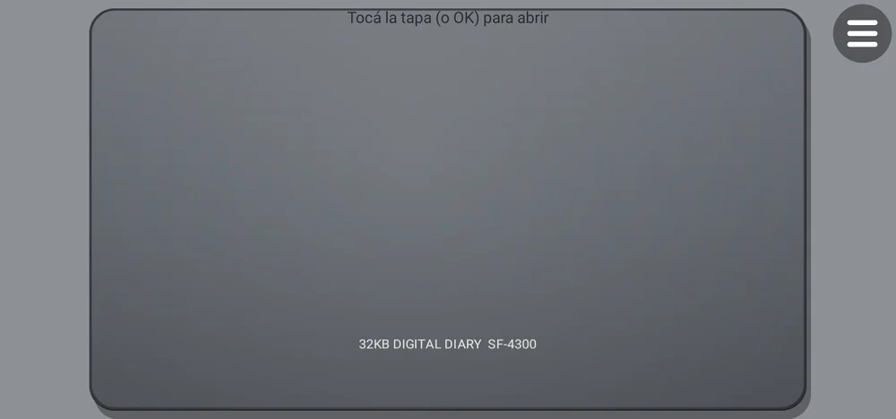
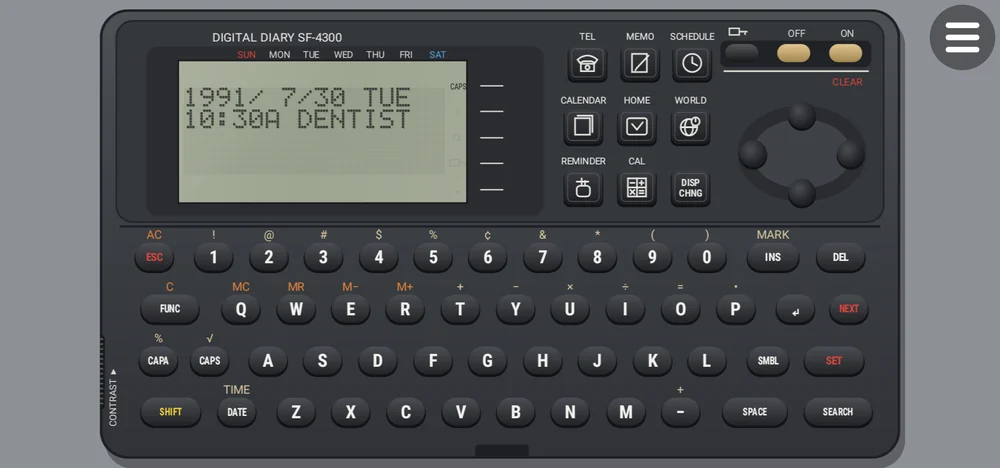
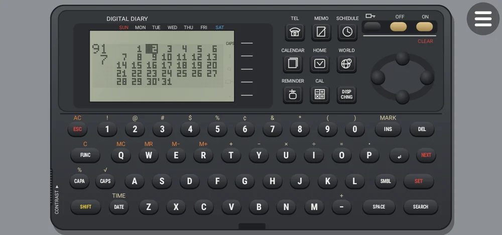
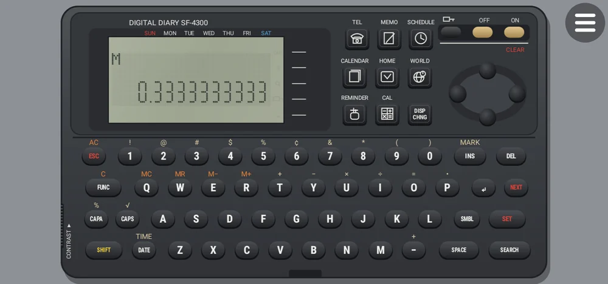
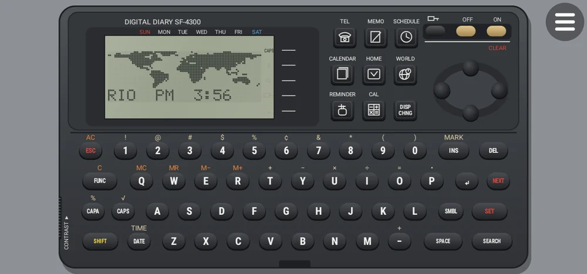
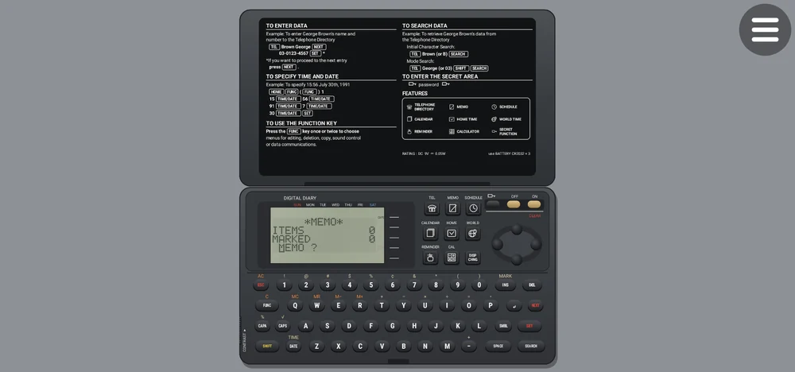

Inicio › Apps › Agenda Digital 90s
Agenda Digital 90s
Réplica fiel, tecla por tecla, de las agendas digitales de bolsillo de los 90.
Réplica fiel, tecla por tecla, del sistema de las agendas digitales de los 90.
App independiente, hecha desde cero. No incluye software original de ningún fabricante y no está afiliada, asociada ni respaldada por Casio. Casio es marca registrada de Casio Computer Co., Ltd.
 Pantalla LCD y teclado completo
Pantalla LCD y teclado completo

Tapa cerrada: tocala y se abre

Agenda de teléfonos

Calendario

Calculadora

Hora mundial con mapa

Manual ilustradoLo que la hace distinta
- 📖 Reconstruida a partir de los manuales de usuario y técnicos originales: mismos menús, modos, pantallas, mensajes, bips y comportamiento.
- 🟩 Pantalla LCD de 96×32 puntos con el aspecto de la época y contraste ajustable.
- 📂 Tapa que se abre con animación, teclas que se hunden y suenan.
- 🎮 Cada tecla funciona con el dedo, el mouse, el control remoto del TV o el teclado.
- 📱📺 En celular y en Android TV, con alarmas que suenan aunque la app esté cerrada.
Qué es
Una agenda electrónica de los 90 en tu celular o en tu Android TV, reconstruida tecla por tecla a partir de los manuales de usuario y técnicos originales: los mismos menús, modos, pantallas, bips y comportamiento, con la pantalla LCD de puntos de la época. No es un dibujo que imita: es el sistema funcionando.
Qué hace
- Reproduce, tecla por tecla, el sistema de las agendas digitales de bolsillo de los 90: los mismos menús, modos, pantallas, mensajes y bips.
- Fue reconstruida a partir de los manuales de usuario y técnicos originales, cuidando cada detalle del comportamiento y del aspecto de la pantalla LCD de puntos.
- Guardás teléfonos, citas con alarma, memos; usás la calculadora, el calendario y la hora mundial con mapa, como en la agenda original.
- Se abre con una animación de la tapa y la cámara se acerca al aparato. Cada tecla se hunde y hace bip.
Requisitos
- Android 9 o superior (celular, tablet o Android TV / TV box)
- En TV se maneja con el control remoto (D-pad: el foco recorre el teclado y OK aprieta la tecla)
- También acepta mouse y teclado físico
Funciones
- Teléfonos (TEL) con índice y búsqueda
- Agenda (SCHEDULE) con alarmas que suenan con la app cerrada
- Calendario
- Calculadora de 10 dígitos con la lógica clásica
- Hora mundial con mapa
- Memo y tablas de símbolos
- Pantalla LCD de 96×32 puntos con contraste ajustable
- Tapa que se abre con animación
- Cada tecla funciona con el dedo, el mouse, el control remoto o el teclado
- Tutorial ilustrado e informe de errores
Cómo se instala
- Descargá el APK e instalalo (en el TV, con Downloader o un pendrive).
- Abrila: tocá la tapa (u OK en el control) para abrirla y seguí el tutorial ilustrado.
- Para comprar: «Activar» → «Comprar con Mercado Pago».
Novedades
- 1.1.1 — Edición web: prueba de 7 días y licencia; sin marcas.
- 1.1.0 — Alarmas con la app cerrada, mapa mundial, 13 tablas de símbolos.